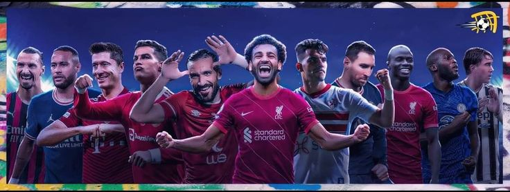
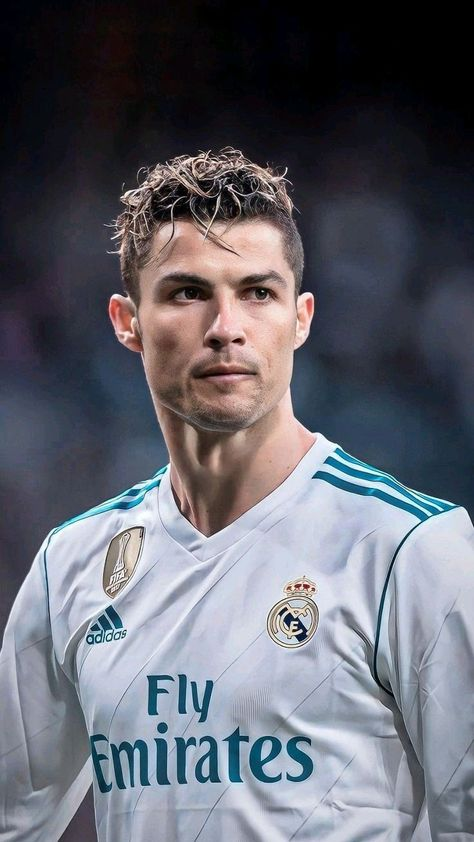

About Football
Football players are individuals who play football (soccer), either professionally or recreationally.
They come from diverse backgrounds and typically dedicate years to mastering the sport. Professional players are
part of clubs or national teams, showcasing their skills in leagues, tournaments, and international matches.
Here are the some famous footballers name are listed below:-
1. Cristiano Ronaldo (39 years)Open

- Most goals in history
- Most penalties in history
- Most internationals goals
- Most hattricks in career
- Nickname is Penaldo
Career Awards
- UEFA Champions league top scorer award
- Puskas Award
- 5 times Ballon d'Or winner
2. Lionel Messi
Inter Miami and Argentina
3. Kylian Mbappe
Real Madrid and France
4. Jude Belligham
Real Madrid and England